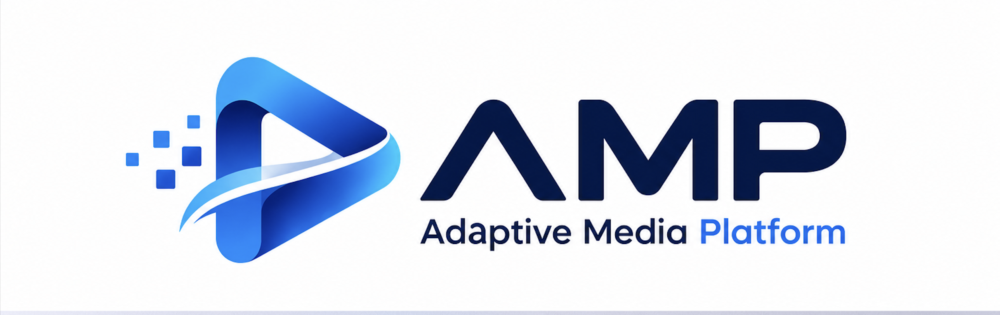

Real-time communication
Enable interactive sessions with WebRTC and a scalable media-server layer.
WebRTC .A flexible foundation for building, orchestrating, and delivering interactive live experiences from real-time communication to adaptive streaming.
.
AMP brings the key building blocks of live media infrastructure into one coordinated platform.
AMP .Enable interactive sessions with WebRTC and a scalable media-server layer.
WebRTC .Extend live sessions to larger audiences through composed HLS streams.
HLS.Coordinate rooms, media resources, and workloads from a central control plane.
.Bring server health and resource telemetry into a unified operational view.
.Prepare composed outputs for distribution and downstream delivery workflows.
.Start with the essentials and evolve toward a distributed media infrastructure.
.A clear separation of responsibilities helps each layer do one job and do it well.
.Rooms, routing, resource decisions, and orchestration.
Lightweight telemetry and health reporting from each node.
Real-time WebRTC sessions and interactive participants.
Composed HLS output, object storage, and delivery integration.
AMP is being shaped as a practical, modular foundation for modern live experiences.
Lets create more connected ways to communicate and share.